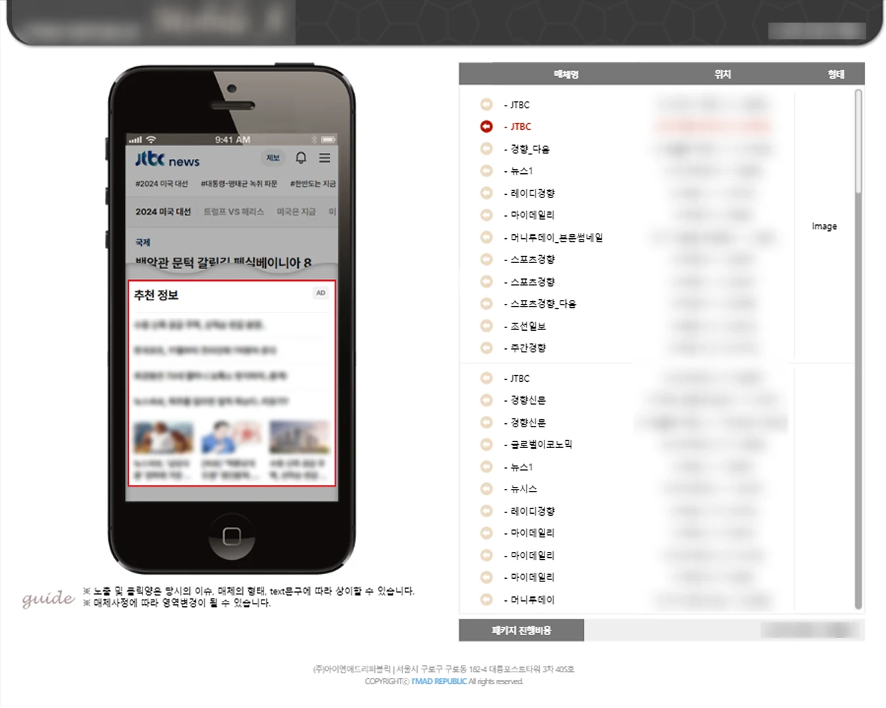
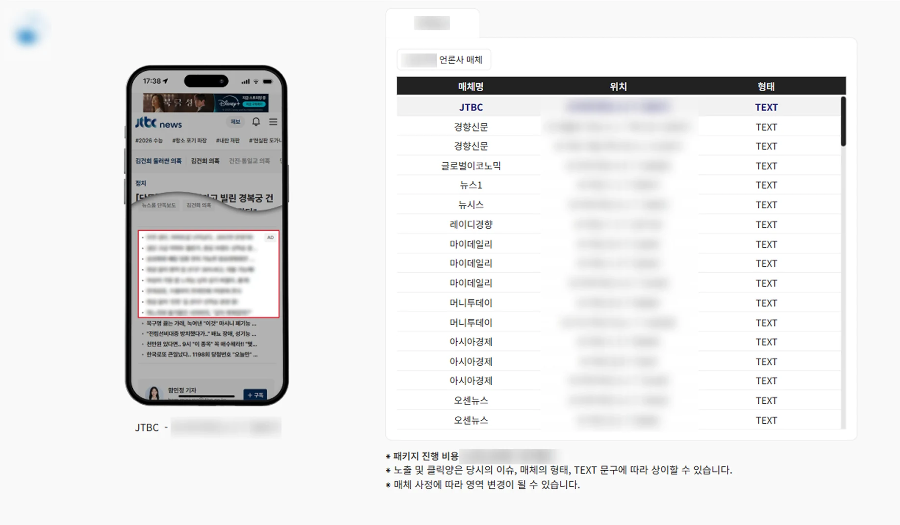
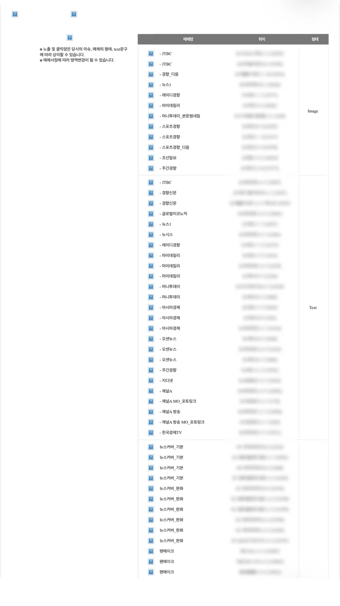
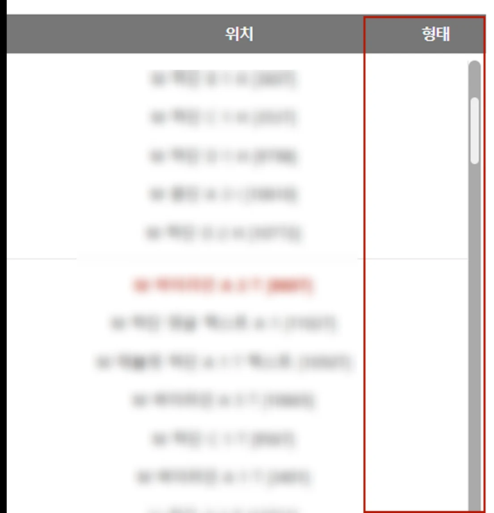

실무 · (주)아이엠애드리퍼블릭
사내 견적서 페이지 개편
PC에서만 읽히던 견적서를 휴대폰에서도 바로 확인할 수 있게 다시 설계했습니다.


단가, 내부 관리 코드, 광고 소재는 보안상 가렸습니다.
발견한 문제
PC 앞이 아니면
견적서를 볼 수 없었습니다
견적서는 계약 전 예비 광고주가 처음 받아보는 자료로, HTML 파일로 전달됐습니다. 그런데 이 파일은 PC에서 여는 것을 전제로 만들어져 있었습니다.
-
휴대폰에서 확인할 수 없는 견적서
HTML 파일은 휴대폰에서 이미지를 불러오지 못했고, 모바일 대응이 되어 있지 않아 화면 전체가 작게 축소되어 보였습니다.
-
지금 보는 매체가 어떤 형태인지 모름
이미지형, 텍스트형 구분이 표 오른쪽에 한 번만 적혀 있었습니다. 구분선이 있어도 목록을 내리면 어느 묶음에 속하는지 알 수 없었습니다.
-
설명할 매체를 찾으려면 스크롤
마케팅팀은 예비 광고주에게 주요 언론사를 기준으로 설명했습니다. 검색이 없어 100개가 넘는 매체 목록을 내려가며 해당 언론사를 찾아야 했습니다.


같은 견적서,
휴대폰에서 본 차이
원래 모바일 버전은 없었습니다. 링크로 열 수 있게 바꾸고, 표 구조는 그대로 둔 채 휴대폰 폭에 맞춰 크기와 간격을 다시 잡았습니다.
- 개편 전
- PC 화면이 그대로 축소되어 확대해야 읽을 수 있음
- 개편 후
- 확대 없이 매체명, 위치, 형태를 바로 읽을 수 있음
손잡이를 좌우로 끌어 비교해 보세요. 넓게 보이는 쪽이 밝게 표시됩니다
바꾼 것과 그대로 둔 것
-
색, 선, 굵기로 정보 계층 정리
헤더는 진한 바로, 선택한 행은 굵기와 배경색으로 구분했습니다. 매체 형태가 바뀌는 지점은 배경색을 바꾸고 구분선을 실선에서 점선으로, 외부 언론사와 자사 매체 사이는 더 굵은 실선으로 나눴습니다. 행마다 있던 장식용 아이콘은 없애고 매체명만 남겼습니다.
옆 화면의 표를 스크롤해 보세요 →
-
모든 행에 매체 형태 표시
묶음 단위로 한 번만 적던 이미지, 텍스트 구분을 행마다 붙였습니다. 목록 어디를 보고 있어도 바로 구분되고, 좁은 화면에서도 깨지지 않습니다.
-
파일 대신 링크로 전달
휴대폰에서도 이미지와 게재 위치 미리보기가 그대로 보이도록, 견적서를 HTML 파일이 아닌 링크로 열 수 있게 바꿨습니다.
-
주요 언론사를 바로 찾는 검색
설명하려는 언론사를 스크롤로 찾지 않도록 매체 검색을 추가했습니다. 마케팅팀이 예비 광고주와 이야기하며 바로 해당 매체를 띄울 수 있습니다.
-
외부 링크에서는 검색과 다운로드 숨김
견적서 링크는 경쟁 업체에도 전달될 수 있었습니다. 사내에서 설명할 때 꼭 필요한 검색이었지만, 외부에서 접속하면 매체 검색과 HTML 다운로드 기능이 보이지 않도록 개발팀과 협의해 분리했습니다.
-
미리보기는 화면 위로
PC에서 표 옆에 있던 게재 위치 미리보기는 휴대폰에서 나란히 둘 수 없었습니다. 행을 누르면 화면 위에 띄우는 방식으로 바꿨습니다.
-
비용과 안내 문구는 항상 보이게
패키지 비용과 안내 문구는 견적을 볼 때 함께 확인해야 하는 정보라, 표 영역만 스크롤되고 하단 문구는 자리를 지키도록 했습니다.
-
표 구조는 PC와 똑같이 유지
견적서를 쓰는 마케팅팀과 광고주는 구조가 바뀌면 정보를 찾기 어려워했습니다. 익숙한 배치를 그대로 두고, 크기와 간격만 휴대폰에 맞게 조정했습니다.
결과
함께 정한 것들
마케팅팀
견적서를 매일 쓰며 예비 광고주에게 직접 설명하는 팀입니다. 실제 사용자인 만큼 마케팅팀의 의견을 중심으로 디자인 방향을 정했고, 필요한 기능(공유, 데이터 구분 강화)도 함께 확인했습니다. 익숙한 구조가 바뀌는 것을 원하지 않아 표 배치는 개편 전 구조와 같게 두었습니다.
개발팀
화면과 동작은 제가 만들고, 언론사 목록이 들어갈 자리는 변수로 비워 개발팀에 넘겼습니다. 개발팀이 서버를 연결해 언론사, 코드, 형태를 불러오고, 외부 접속 시 검색과 다운로드 기능을 숨기는 작업과 마케팅팀이 요청한 HTML 다운로드 기능을 붙였습니다. 함께 동작을 확인한 뒤 마케팅팀에 링크를 전달했습니다.
-
익숙함을 지키느라 더 바꾸지 못한 부분
마케팅팀의 의견에 따라 PC 화면 형태를 최대한 유지했습니다. 그 결과 모바일에서는 위치 열이 두 줄로 꺾여 한 화면에 보이는 매체 수가 줄었습니다. 변화가 필요하다는 근거를 미리 준비해 설득했다면, 위치를 매체명 아래로 내리는 등 휴대폰에 더 맞는 구조를 제안할 수 있었을 것입니다.
-
페이지 안에 스크롤 영역이 하나 더 있습니다
비용과 안내 문구를 고정하기 위한 선택이었습니다. 당시 사용하는 팀에서는 불편하지 않다는 의견이라 유지했지만, 휴대폰에서는 스크롤이 겹쳐 조작이 헷갈릴 수 있어 아쉬움이 남는 부분입니다.